Look and speak · three ways to show it
Rendered by core E's own renderer (a prototype built from it), on the desktop page, headphones head. Pick one; nothing is shipped yet. The thick flat ring and the caption are gone in all three.
A · The bot itself
No added shape. The head's own grid nodes along its edge light up clockwise as you hold your look; all lit when it is ready, the eyes go wide and it nods once; while it listens they pulse with your voice; while a reply is paused, the eyes look at you and the edge blinks slowly.
Dark
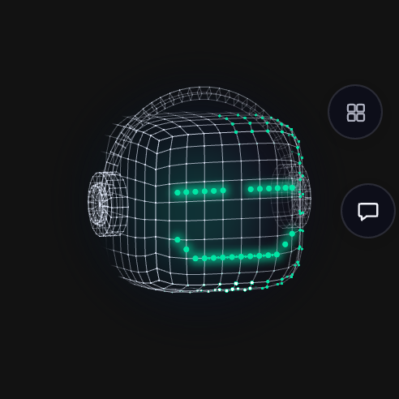
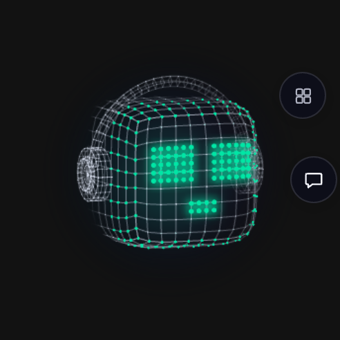
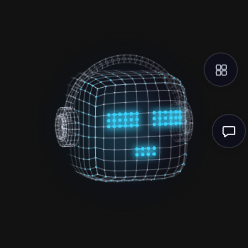
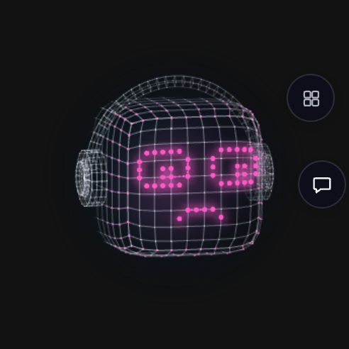
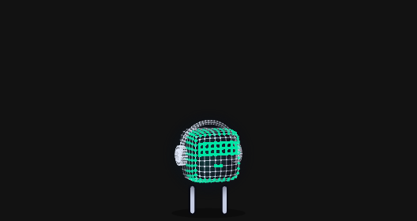
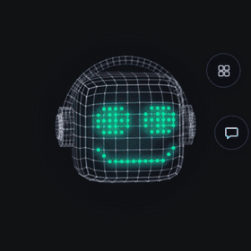
Light
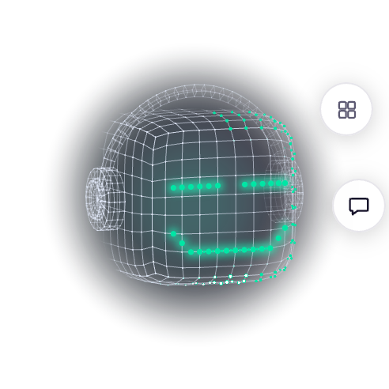
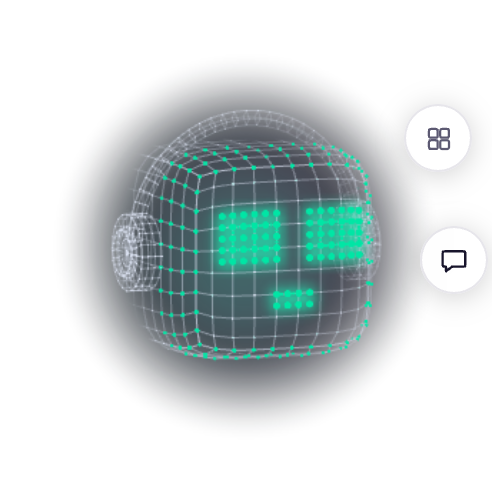
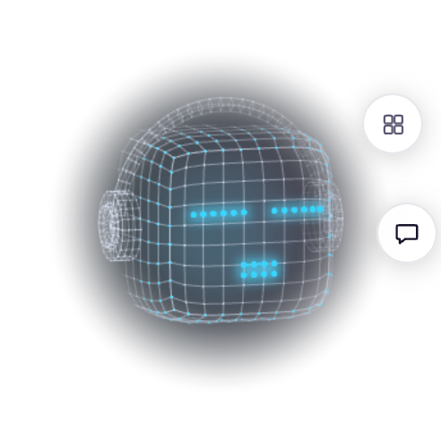
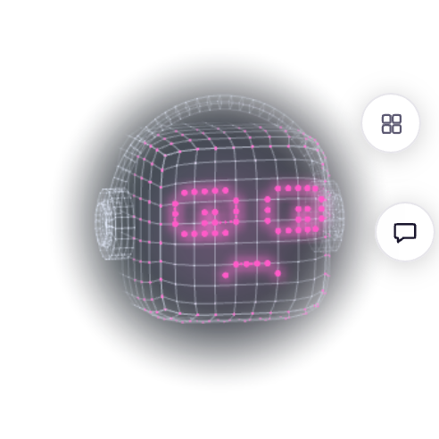
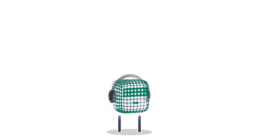
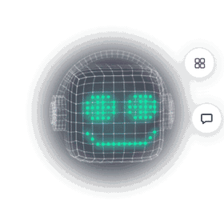
B · A dotted orbit
A thin ring of dots round the head, in the wireframe's dot style: it fills clockwise while arming, breathes when ready, ripples with your voice while listening, and turns slowly, sparse, while a reply is paused.
Dark
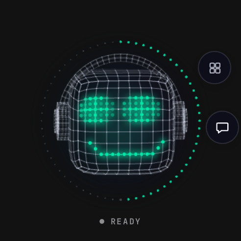
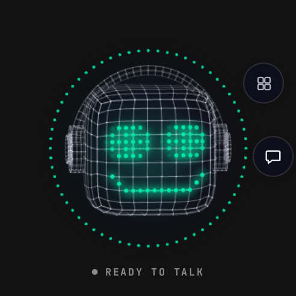
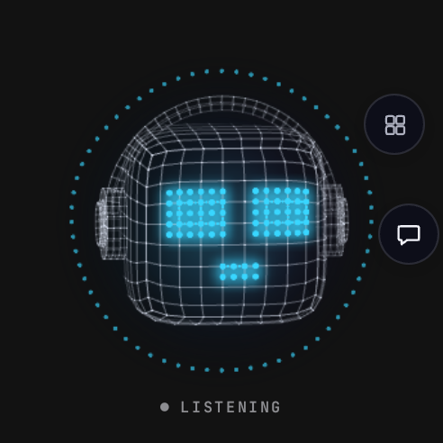
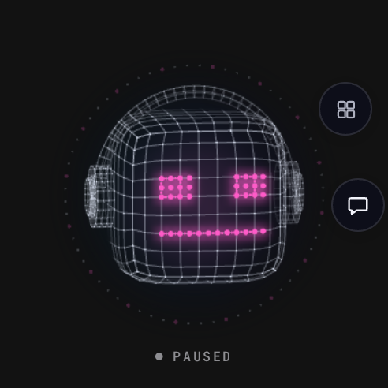
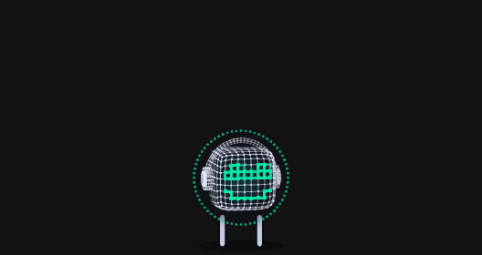
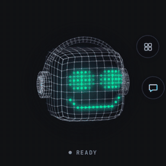
Light
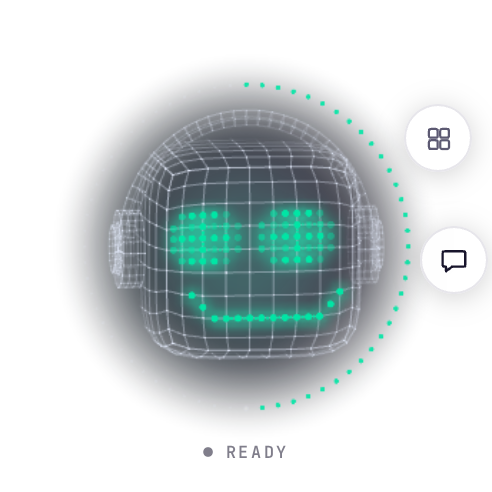
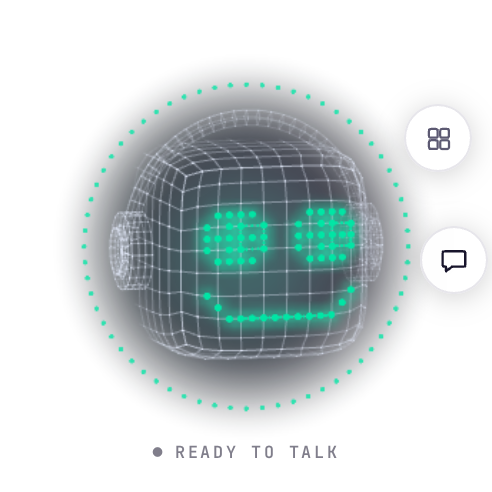
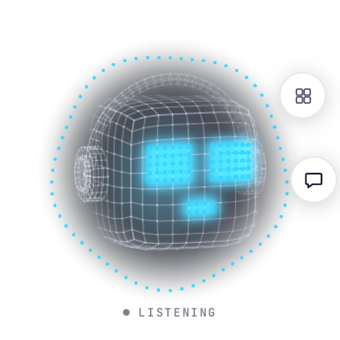
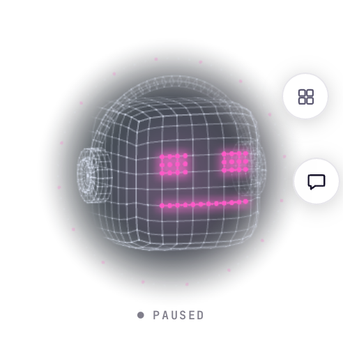
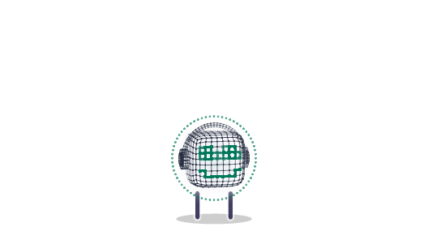
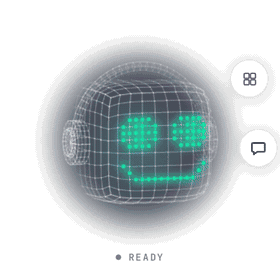
C · The headphones light
The most minimal: the headphones' pads light, rising while arming, steady when ready, pulsing with your voice while listening, a slow blink while a reply is paused. The face only brightens a little.
Dark
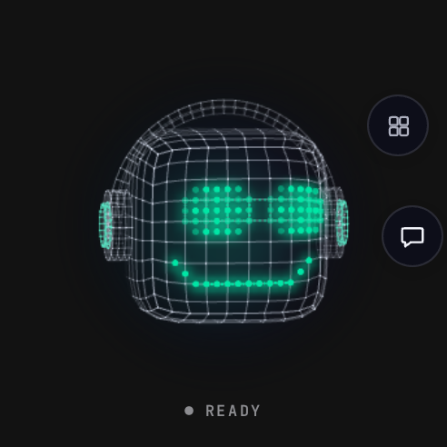
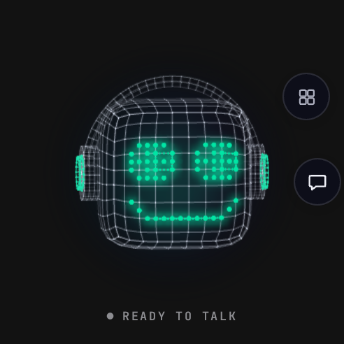
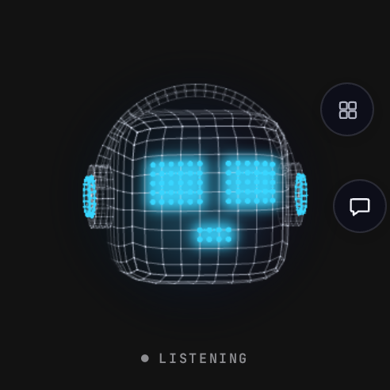
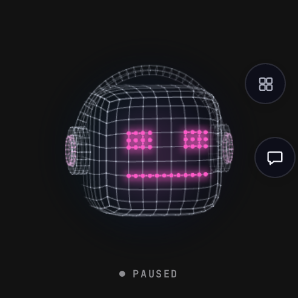
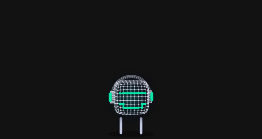
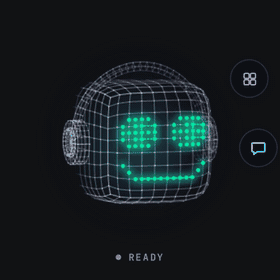
Light
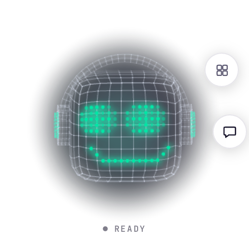
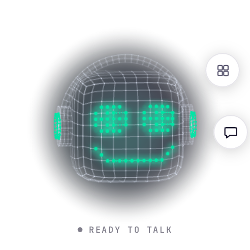
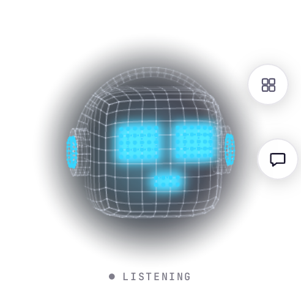
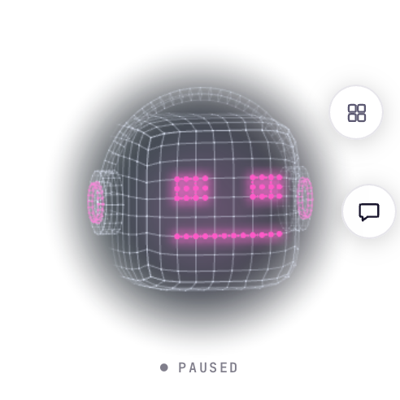
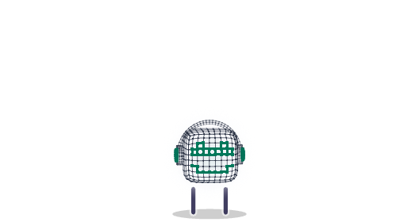
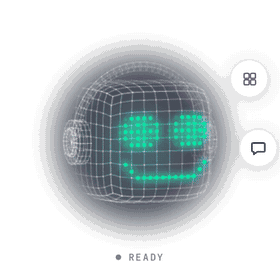